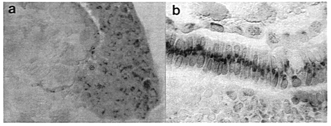

By K. Griffin, Developmental Biology Research Centre, Randall Institute, King's College, 26-29 Drury Lane, London WC2B 5RL
Freeze substitution is a previously described technique for the gentle fixation and dehydration of tissue. I originally employed it solely because it was reputed to result in minimal loss of antigenicity and had been used by other groups with similar research interests (Shiurba et al, 1991; Michael et al, 1984). However, I wish to draw it to the attention of other zebrafish workers because it gives such excellent histological results with zebrafish embryos which are far superior to other methods, such as paraformaldehyde fixation for example (fig 1).
The main features of the technique are as follows. By freezing the tissue at a temperature well below the eutectic point (-85C; the minimum temperature at which ice crystallization occurs), rapid and uniform ice formation occurs and tissue damage due to crystal formation is eliminated, so long as the tissue sample is small and the cryogen volume is large. The cryogen recommended here, isopentane, has high specific heat and thermal conductivity, so that heat from the sample is conducted away fast and does not adversely affect the temperature of the cryogen. After freezing, the tissue is transferred to methanol kept cold on dry ice. The methanol slowly dissolves (substitutes) the ice from the tissue, but has very little fixative activity because fixation is indirectly proportional to the ambient temperature.
Freeze substitution is, therefore, a convenient method for generating high quality histological material without the use of cross-linking fixatives and with only minimal denaturation. Since it is compatible with the use of wax sectioning, it is also more convenient than cryo-fixation. It might also be the method of choice for the dehydration and embedding of previously fixed embryos, e.g. sectioning of whole-mounts or prior to sectioning for in situ hybridization or immunostaining.
Method
1. Place 100 ml of isopentane in a small Duran bottle into an ice box or wide-mouthed thermos filled with dry ice. When the temperature is equilibrated (1-2 hours), pour ~200 mls of liquid nitrogen directly over the bottle. It is best to monitor the temperature of the isopentane with a thermo-couple, but a rule of thumb is to wait 10-15 min after pouring the nitrogen before freezing the tissue. It is a good idea to swirl the isopentane periodically to equalize the temperature. In a separate ice bucket, place as many 5-10 ml labeled vials of methanol as required on dry ice. (Screw-top scintillation vials are ideal; flip-top lids are very difficult to remove when cold.)
2. Pipette embryos (in their chorions) on to one end of a 5x1 cm piece of nylon gauze (or other suitable material). Dab off excess water through the underside of the gauze; the embryos will adhere quite strongly to the gauze through surface tension. Embryos can also be dechorionated and embedded in agarose (e.g. 0.8% low-melting point agarose for support; excess agarose should be trimmed with a scalpel prior to freezing.
3. Hold the gauze by the other end with forceps and plunge the embryos into the center of the isopentane for 1 min.
4. Transfer the embryos (now securely frozen onto the gauze) to the methanol. Store at -70C (at least), preferably colder, for 5 days or longer*. I have not tried shorter times.
5. When required, slowly warm the tissue by transferring it to -20C (freezer) for 2-3 hrs, the fridge for 2-3 hrs, and to room temperature for 2-3 hrs.
6. The embryos are ready for embedding. I routinely use polyester wax (BDH) because this is molten at 37C and is gentler on the tissue. It is also soluble in methanol or ethanol, avoiding the need for additional organic reagents. This wax can conveniently be cut in a cool room (<20C).
The one drawback of this method seems to be the short shelf life of the tissue. I have stored tissue in the fridge for 2 months and found a considerable increase in non-specific nuclear staining (looks similar to toluidine blue counterstaining) and a decrease in signal. However, the results are sufficiently good to offset this minor complaint.
* At -70C ice crystals will be able to form, but this does not seem to be a problem here, perhaps because zebrafish embryos dehydrate sufficiently before crystals form. However, should material of higher quality be required, e.g. for EM work, then it is recommended to use 15% propylene glycol as a cryoprotectant during the freezing, and to freeze substitute in ethanol at -100C throughout. This is a slightly more complicated procedure but does not require expensive equipment; the temperature is attained using a slurry of dry ice and nitrogen kept in a thermos in the freezer with periodic monitoring and addition of more dry ice and nitrogen as required. Consult Campbell et al (1991) for a description of the technique.
References
 Figure 1. (a) Sagittal section of a zebrafish embryo at 50% epiboly immunostained with an antibody to bFGF. The future dorsal side is shown at the onset of involution (animal pole is uppermost). The EVL, deep cells and the YSL are all easily distinguished. The yolk platelets appear brownish and refractile after equilibration in glycerol and under Nomarski optics. The numerous brown intracellular spots are HRP staining products. (b) Longitudinal section of a ten somite embryo immunostained using the same antibody. The notochord is well displayed in this section, showing a heavy central area of staining in what appears to be the Golgi apparatus. The yolk cell and YSL can be seen immediately underneath, and the neural tube above.